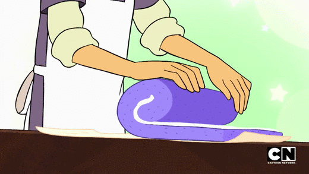
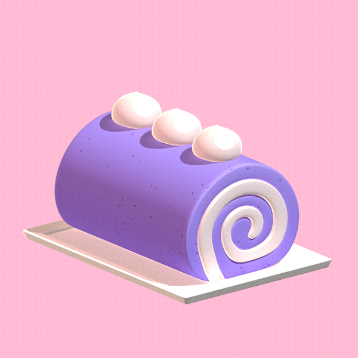

Ube Roll inspired by Steven Universe

"I used to eat this as a kid all the time." - Lars
This can be a difficult recipe to follow if you're just starting out with cooking. If you have a friend
who's made a roll cake before, it might be a good idea to invite them over to help out!
Ingredients
For the cake:
- 3 Tbsp powdered ube
- ½ cup water
- 4 eggs
- ½ cup granulated sugar
- 40 grams cake flour
- ½ tsp ube flavoring
- ¼ tsp violet food coloring
- 2 Tbsp vegetable oil
For the buttercream icing:
- 6 ½ ounces egg whites
- 1 cup sugar
- 2 tsp vanilla extract
- 4 sticks butter; softened
Instructions
- Preheat oven to 325°F.
-
Add 3 Tbsp of powdered ube to ½ cup boiling water until a thick paste forms to get rehydrated ube.
Set aside to cool and cover to keep moist.
-
In a stand mixer bowl at medium speed, add in 4 egg whites and slowly mix in ½ cup of granulated
sugar. Then add egg yolks, one at a time, until incorporated. Sift in 40 grams of cake flour on
medium speed. Afterwards, combine 50 grams of rehydrated ube, ½ tsp ube flavoring, ¼ tsp of violet
food coloring, and 2 Tbsp vegetable oil. Slowly mix for 30 seconds until just combined.
-
Grease a quarter sheet pan, 9 by 13 inches, and place parchment paper on top. Spread out cake batter
into a thin layer and tap on counter to remove any bubbles.
- Place in 325°F oven for 10-15 minutes until it springs back when touched.
- Place on cooling rack for about 20 minutes until completely cooled.
- On a stovetop place a large pot of water and bring to a simmer.
-
In a new stand mixer bowl combine 6 ½ ounces of egg whites, 1 cup sugar, and 2 tsp of vanilla
extract. Place bowl over the large pot of simmering water and stir until it reaches 160°F.
Then place in a standcmixer and mix at high speed for 5 minutes until it triples in volume and
cools off. Ideally until room temperature.
-
Put stand mixer on medium speed and slowly add in 4 softened sticks (room temperature) butter, half
a stick at a time, and wait for it to be completely incorporated before adding the next half stick
of butter.
- After that’s done, place on high speed for another minute until it is smooth and creamy.
-
Check cake to see if it’s completely cooled and flip over onto parchment paper. Slowly remove
parchment paper from bottom. Flip over once again so it is facing up like it did when it came
out of the oven.
- Cover with buttercream icing.
- Slowly roll it up lengthwise. Put in fridge for at least an hour for it to become firm.
- Take out, add 3 dollops of buttercream icing on top, and enjoy!
